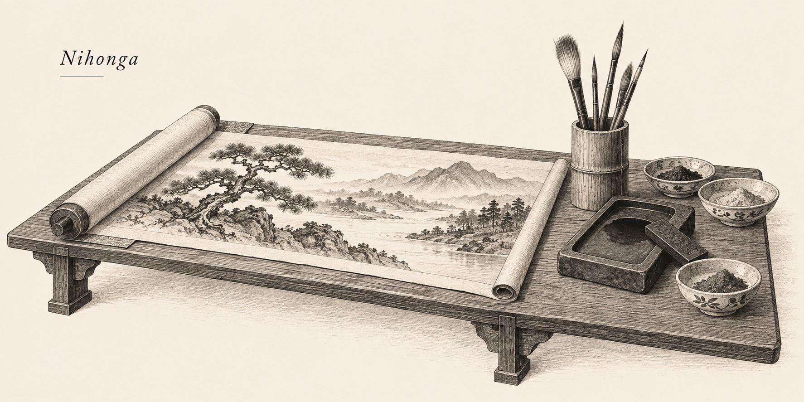
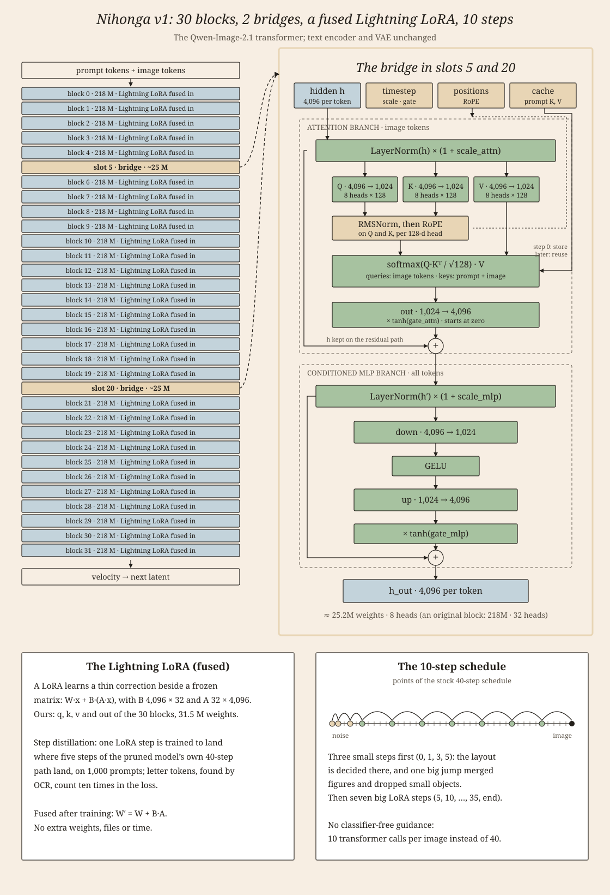
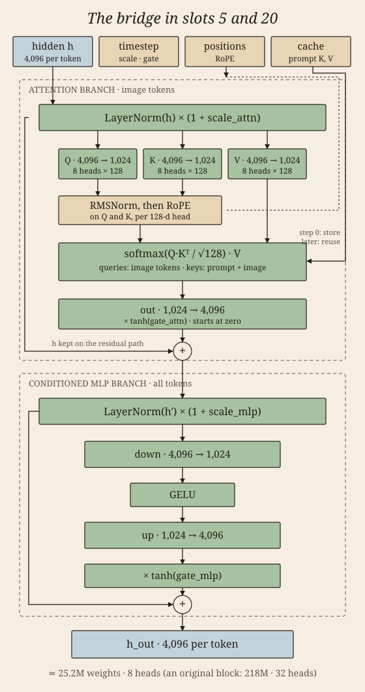
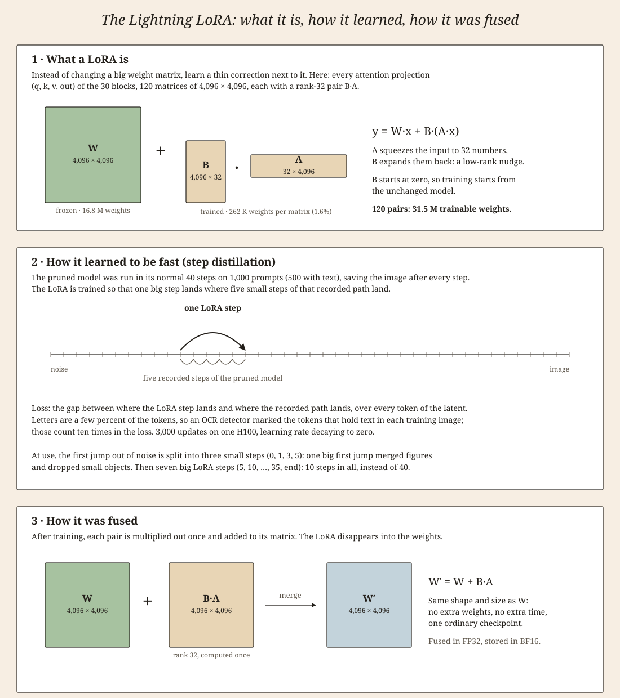
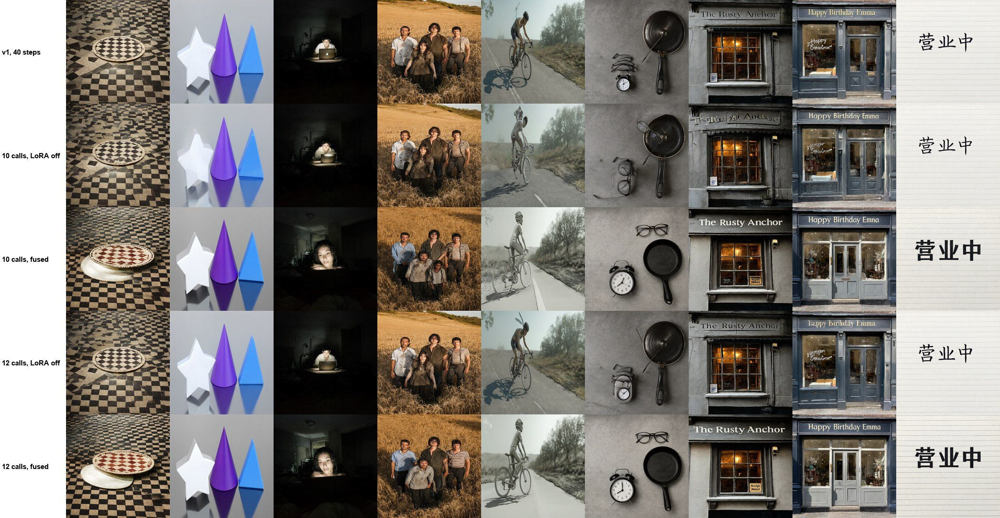

Nihonga (日本画) paints in mineral pigments on silk and paper, building an image up in few, deliberate layers.
This model does the same for an image transformer: fewer blocks, and far fewer strokes to finish an image, without losing the letters, which are the first thing to go.

Latest release
Qwen-Image-2.1 Nihonga v1.0 text to image · 10 steps
Qwen-Image-2.1 with two of its 32 transformer blocks replaced by small learned bridges, and a Lightning LoRA (step distillation) fused into the weights, so an image takes 10 steps instead of 40. Run it with stock diffusers and the loader shipped with the weights. Built with Qwen; for non-commercial use.
- 3.9×faster: 1.75 s against 6.89 s for a 1024 × 1024 image on one H100
- 15 of 16exact spellings on our hardest sign test; the original model gets 16
- 10steps instead of 40, without classifier-free guidance
- 6.73 Btransformer parameters, from 7.12 B: 30 blocks and 2 bridges
- Nihonga v1.0
- published Lightning LoRA (LightX2V), on the full model
- Qwen-Image-2.1, unchanged
Spelling: four seeds each of a storefront sign, a shop-name sign, a poster tagline and a handwritten Chinese note, read at full resolution; the same prompts and seeds for every row. On 25 general prompts, 2 Nihonga images miss content that the 40-step pruned model draws (a laptop lighting a face; four friends drawn as five). Speed: batch 1, BF16, text encoder and VAE included; peak memory 39.3 GB against 39.6 GB, because the unchanged 17.5 GB text encoder dominates. Nearly all of the speed comes from the 10-step schedule; removing two blocks saves about 4% per step. Text to image only: editing, reference images and transparency were not trained or tested.
Architecture




- Bridges
- Blocks 5 and 20 are replaced by modules of about 25 M weights, against 218 M for a block: an 8-head attention branch with its own prompt cache, then a timestep-conditioned MLP, trained end to end against the original model. Blocks were chosen by checking spelling, not only average error: block 13 looked cheap by average measures and turned out to carry letters, so it stays.
- Lightning LoRA
- The speed comes from a Lightning LoRA we trained for this model. A LoRA leaves each weight matrix frozen and learns a thin correction beside it: two small matrices B and A of rank 32, here on q, k, v and out of the 30 blocks (31.5 M trainable weights). It was trained by step distillation: the pruned model was run in its normal 40 steps on 1,000 prompts, half with text, saving the image after every step, and the LoRA learned to make one big step land where five of those small steps land. The tokens that hold letters, found by OCR, count ten times in the loss. After training, each pair was multiplied out and added to its matrix (W′ = W + B·A), so the LoRA is fused into the weights: no extra files, weights or time.
- 10-step schedule
- Points 0, 1, 3, 5, 10, 15, 20, 25, 30 and 35 of the stock 40-step schedule, then the end. One big first jump from noise merged figures, dropped small objects and broke patterns; three small steps there fixed them.




How to use it
Requires the diffusers commit with the Qwen-Image-2.1 pipeline. The repository ships the modified transformer and nihonga.py; the text encoder, VAE and processor load unchanged from Qwen/Qwen-Image-2.1.
pip install "diffusers @ git+https://github.com/huggingface/diffusers@bdc2bea37a36038c44452811610489ea30ede229" \
transformers accelerate safetensors huggingface_hub torch
hf download jjmcarrascosa/Nihonga-v1.0 --local-dir ./nihonga-v1
import sys, torch
sys.path.insert(0, "./nihonga-v1")
from nihonga import load_pipeline
pipe = load_pipeline("./nihonga-v1")
image = pipe('A storefront named "The Rusty Anchor", warm window light', width=1024, height=1024,
num_inference_steps=10, true_cfg_scale=1.0).images[0]The 10-step schedule cannot be produced by the stock scheduler on its own. load_pipeline installs a small scheduler class that builds the stock 40-step schedule for the image size and keeps the ten points. For the stock scheduler, or interfaces such as ComfyUI with a custom-sigmas input, pass the ten values directly with a neutral scheduler (use_plain_sigmas and nihonga_sigmas); sigmas.json lists them for the standard sizes. Both routes give pixel-identical images.
Technical paper
A paper with the full method and measurements is in the writing.
Until then, the research log carries every step: block scans, bridges, healing, the drift test and the release, including what did not work.